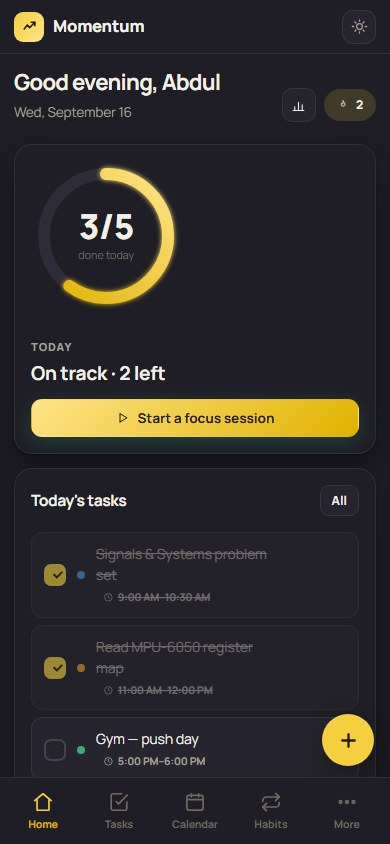

91/ 100
Advanced Engineering Mathematics
- Assignments
- 23.75 / 25
- Proctored exam
- 67.5 / 75
- Standing
- Top 1% of 815 certified
Biomedical engineering/Medical imaging/Embedded sensing
Third-year B.Tech at MIT Manipal. I work where physiology meets hardware — the physics inside a scanner, and the sensor on a wrist that knows when something has gone wrong.
Medicine is full of instruments that turn physics into decisions. I want to be the engineer who understands both ends of that chain — the coil and the clinician. I trained inside a 3 Tesla MRI department, I'm building a wearable that can tell a fall from a stumble, and in between I keep the mathematics sharp and ship interfaces people actually use.
Jul 2024 → 2028
MRI Department · Sahyadri Diagnostic Centre, Aurangabad
22 Jun – 21 Jul 2026
In development · started Apr 2026
A wearable that calls for help when the wearer can't.
People living alone may not get help after a fall, a faint or a medical emergency. GuardianBand is meant for the moments when nobody is watching.
Fig. 03 simulates the logic. It is not recorded data.
Quietly sampling motion from the IMU. Green light.
Something looked like a fall. It watches for recovery movement before doing anything.
The buzzer sounds. The wearer has a few seconds to press cancel.
No cancel. The GSM module texts the predefined contacts.
Status Concept and detection logic are documented. The hardware build starts this semester under faculty guidance.
Designed and built end to end.


A concept website for a café near End Point Road, Manipal, built to pitch custom sites to local cafés. Menu at Manipal prices, story, reviews and a visit page, designed phone-first.
React 19 · Vite · Tailwind 4 · Framer Motion · GitHub Pages
One platform replacing a multispecialty hospital's paper records: appointments, pharmacy, laboratory, operation-theatre scheduling and role-based logins for doctors.
Case study and source on GitHub soon
Every document here is the original. Click to open.
NPTEL · IIT Kharagpur · 12 weeks · 4 credits
Roll no. NPTEL26MA37S990100380
NPTEL · IIT Madras · 12 weeks · 4 credits
Roll no. NPTEL26EE30S790100005
Hover to fan them out, click any one to read it in full. NPTEL certificates carry a roll number and QR code you can verify at nptel.ac.in.
MRI physics · system components · imaging workflow · MR safety · QA and preventive maintenance
Arduino · MPU-6050 / I²C · GSM modules · sensor interfacing · embedded C
Engineering mathematics · modelling · MATLAB · Python
JavaScript · React · TypeScript · Tailwind · Vite · Git and GitHub
Interface design · typography · motion · design systems
Structured technical reports · daily internship logs · concept notes
Medical devices, imaging, embedded systems or R&D — looking for an internship where I can build and learn. Based in Manipal, happy to relocate.